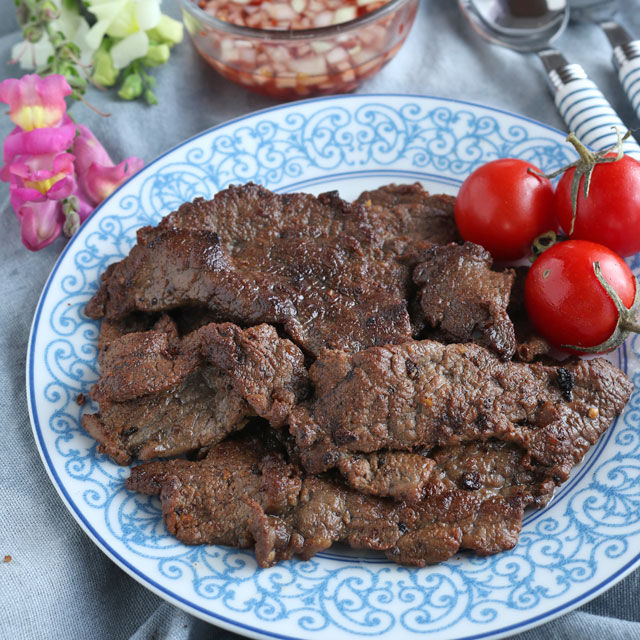

Home Page
Beef tapa

Description
Beef tapa is a traditional Filipino dish of thinly sliced beef that is
cured, marinated, and then pan-fried or grilled until tender and
caramelized
Ingredients
- 1 pound thinly sliced beef
- 1/4 cup soy sauce
- 1/4 cup vinegar
- 4 cloves garlic, minced
- 1 tablespoon brown sugar
- 1/2 teaspoon ground black pepper
- 2 tablespoons cooking oil
Steps
-
Combine the soy sauce, vinegar, minced garlic, brown sugar, and black
pepper in a bowl.
-
Add the thinly sliced beef and mix until it is evenly coated with the
marinade.
-
Cover the bowl and marinate the beef in the refrigerator for at least 30
minutes, or overnight for more flavor.
- Heat the cooking oil in a pan over medium heat.
-
Cook the marinated beef in batches until browned, tender, and slightly
caramelized around the edges.
- Serve the beef tapa with garlic fried rice and fried eggs.
Beef tapa is a Filipino breakfast dish made with thinly sliced beef
marinated in a savory, slightly sweet mixture of soy sauce, vinegar,
garlic, and spices. The beef is pan-fried until tender and caramelized
around the edges.
It is traditionally served with garlic fried rice and a fried egg,
creating the classic Filipino breakfast combination known as tapsilog.